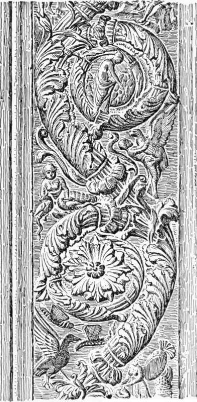

Chapter X. Architectural Carving Of The Renaissance
Description
This section is from the book "Character Of Renaissance Architecture", by Charles Herbert Moore. Also available from Amazon: Character of Renaissance Architecture.
Chapter X. Architectural Carving Of The Renaissance
All effective sculpture on buildings, including that of the human figure, is architectural carving; but it is in Gothic art only that sculpture of the human figure, as well as that of subordinate ornamentation made up of the other elements, has at once an appropriate architectural character and a high degree of excellence in the development of form. In the best Greek art the carving of the human figure has, indeed, a grandly monumental quality; but the Greek sculptor did not seek primarily to give his work an architectural expression. He wrought it with a kind of perfection that is not compatible with the fullest measure of such expression. Greek sculpture, though placed on a building, is in a measure independent of it, and thus it not only loses nothing, but may even gain in value, when taken from its place on the building and set up in a museum where it can be viewed by itself.
In the art of the Renaissance the human figure in the full round is treated so independently as to lose nearly all monumental expression, while for strictly architectural carving we have reliefs on pilasters, friezes, and capitals, made up of scrolls and meanders with leafage, grotesque animal life, and a great variety of objects, including the human figure, represented more or less fantastically as ornament. Renaissance sculpture of the human figure thus having so little proper architectural character, we shall not consider it here, but confine our attention to the relief carving, which has a closer architectural connection, if not a much truer architectural expression.
A great deal of this carving is in close imitation of Roman models, as a comparison of a fragment of Roman arabesque from the Museum of Florence (Fig. 96) with a fragment of Renaissance arabesque from the Ducal Palace of Gubbio (Fig. 97) will show. But in elegance, delicacy, and subtlety of line highly artificial, consisting of formal scrolls and meanders, and the leafage and other forms introduced are treated artificially without being finely conventionalized. The conventions of this and surface, the best carving of the Renaissance is supdior to that of ancient Rome. The linear basis of such design is art are not the natural result of a true sense of ornamental abstraction, of architectural fitness, and of the nature of materials. They do not manifest a fine appreciation of the beauty of the object conventionalized. They are factitious conventions which often do violence at once to the forms of nature, and to the true principles of design. The ear of barley, and the flower stalks, in Plate IX, a characteristic work of the Lombardi in the church of Santa Maria dei Miracole in Venice, illustrate this. The rigid parallel straight sides and the square end of the barley ear, and the flaccid sinuousness of the flower stalk, are expressive of no architectural or material conditions to which the artist had to conform. They express nothing but the designer's insensitiveness to the character and beauty of the natural forms. Compare the ear of barley (Fig. 98) from an ancient Greek coin in the British Museum.1 Though severely conventionalized, this representation finely expresses the true character of the real object. Such details as the rectangular barley ear and nerveless flower stalk in Plate IX would seem to indicate an incapacity on the part of the designer to appreciate those elements of beauty in plant life which may be made effective in ornamental carving, were they not associated with other details that manifest a fuller sense of vital character. The foliation of the scrolls in the same relief (Plate IX) has a character which makes us wonder how a designer who could so finely render the nervous life of leafage could associate with this leafage the lifeless details just noticed, and the further monstrosities of the axial composition including the characterless grotesque animals out of which the scroll leafage issues. The symmetrical Arabesque scheme of the whole, and the nonsensical details of the central part, are from the Roman source,1 while the leafage, though also cast in the Roman form, owes much of its best quality to the inspiration of Gothic art. The qualities that give their subtle charm to such conventionalized forms elude complete analysis and definition, but they are based on the proportions, curvature, and relations of lines and surfaces that belong to the organic forms of nature.
Fig. 96. — Roman Arabesque.
Plate IX
Relief Of The Lombardi Venice
Fig. 97. — Renaissance Arabesque.
Fig. 98. — Greek coin, magnified.
1 Coin of Metapontutn.
Such subtle beauty of leafage is exceptional in the ornamental design of the Renaissance. The carver of the fifteenth century generally misses the vigour of line, the finer surface flexures, and the expression of organic structure shown in the supremely fine details of the reliefs by the Lombardi. The convolutions of Renaissance design are apt to be more formal and the leading lines less springy. In some cases the finer qualities of curvature are wholly wanting, as in the scrolls that border the bronze door-valves of St. Peter's in Rome by the Florentine sculptor Filarete (Fig. 99). In these scrolls the heavy and lifeless character of the poorest Roman models is reproduced. The finish of these carvings, in the better examples, is usually elaborate, and in such work as that of the Lombardi in Venice it is exquisite. But in many cases it is mere surface smoothing without expressive character, as in the leafage of Benedetto da Maiano in the pulpit of Santa Croce of Florence, where the expression of the beautiful leaf anatomy is almost wholly polished out.
Fig. 99. — Arabesque by Filarete, Rome.
1 Vitruvius, bk. 7, chap. 5, refers with disapproval to the tasteless and meaningless monstrosities embodied in the ornamental art of his time, and the remains of Roman reliefs offer many examples of such design.
Continue to:
- prev: Palace Architecture Of The Renaissance In North Italy. Part 4
- Table of Contents
- next: Architectural Carving Of The Renaissance. Continued